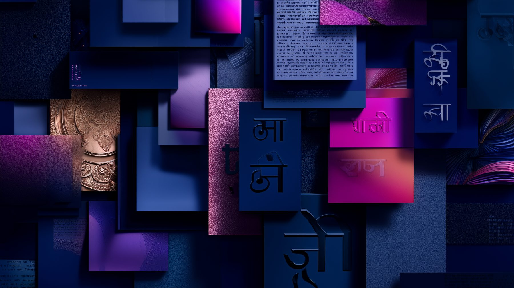

Vernacular Branding
Project: Vernacular Branding
Languages, Colours, and Cultures of Indian Identity
The Vernacular Branding project begins with an impulse to archive, celebrate, and structurally analyze India’s informal visual landscape—the precise mechanisms by which streetscapes, hand-painted lettering, and everyday commerce engineer their own distinctive identity systems.
Conceived in the tactile tradition of a premium design monograph, this archive carves out a new intellectual space. It positions vernacular graphic design alongside formal architecture, regional cinema, and historic textiles as an autonomous discipline worthy of curation, deep preservation, and academic pride. Our omnipresent signboards, localized packaging, and public graphic expressions are far more than functional urban wayfinding; they are critical cultural artifacts.
The project frames a vital cross-continental conversation through visual curiosity. Indian public spaces are phenomenally dynamic, shaped by dozens of languages, local scripts, and fluid regional traditions. By paying methodical attention to these everyday practices, Vernacular Branding invites designers and cultural theorists to discover how communication in the vernacular medium carries profound graphic ingenuity, social resilience, and localized identity.

Why This Matters
From hand-painted storefronts and vintage matchbox typography to political ephemera and festive public hoardings, design in India is inherently cultural. It acts as a vessel for collective memory, community storytelling, and civic identity. By systematically documenting these transient graphic systems, the project aims to:
- Celebrate the Ingenuity of Vernacular Craftsmen: Honoring the precision and manual skill of street painters, sign-makers, and informal type-setters who physically compose the public landscape.
- Decenter the Design Discourse: Moving graphic history beyond Western-centric corporate aesthetics and elite agencies directly into the lived, democratic realities of the Indian street.
- Bridge Intergenerational Perspectives: Fusing five decades of foundational Indian design pedagogy with modern European architectural and spatial research.
- Map an Evolving Heritage: Documenting how physical, manual graphic traditions negotiate space, resist uniformity, and adapt in a hyper-digitalized, global era.
What the Archive Includes
The Book
At the structural center of this initiative is the hardcover research volume, Vernacular Branding – Reading Identity Through Design and Visibility (ISBN: 978-93-344-2686-1). Co-authored by Prof. Bhuleshwar Mate and Kaushambi Mate, the publication is part archival record, part memoir, and part design critique.
Printed on premium 170 gsm art paper, it treats the public streetscape as an open-air exhibition. The text populates “vernacular branding” as a rigorous design theory, moving the discussion beyond marketing metrics to evaluate public graphics as an evolving artistic movement.
The Open Call & Collective Network
The book is fundamentally built upon a collaborative foundation. In September 2025, the project launched a national Open Call for Contributions, gathering fragments of lived visual culture from contemporary practitioners, photographers, and researchers across the country. From rock-cut art interpretations in Tripura to storefront documentations in Bangalore, these diverse perspectives form the multi-voiced fabric of the final archive.
The Institutional Presentations & Micro-Exhibitions
To activate the research within contemporary design discourse, Vernacular Branding manifests physically through traveling architectural installations and institutional presentations.
The foundational micro-exhibition was presented at the Government College of Art and Design (GCAD), Nagpur, to mark the institution’s historic 50th anniversary. Serving as an ongoing dialogue between academic documentation and raw street-level aesthetics, the project continues to travel—circulating within the permanent reference collections of elite research libraries, including the National Institute of Design (NID), Assam, and the National Institute of Fashion Technology (NIFT), Hyderabad.
Our Vision
At its core, Vernacular Branding is a challenge to see the contemporary cityscape differently: to acknowledge the street as a living design studio, to notice how cultural identity is negotiated in paint, pigment, and script, and to preserve these informal systems as vital cultural heritage.
This project remains an open, expanding archive—an invitation to look more closely, analyze more deeply, and participate in preserving our visual landscape.
Note on Archival Plates: The visual spreads displayed across this digital platform include historical records, documented fieldwork, and original submissions from our active contributor network. All published plates within the final volume are fully attributed to their respective artists, designers, and archival field sources.
What’s Your Next Step?
If You Are New to the Archive
Immerse yourself in five decades of documented visual culture. Secure your copy of the limited hardcover publication, complete with rich illustration plates, academic essays, and extensive street-level design archives.
VIEW THE ARCHIVEIf You Want to Join the Conversation
Does India’s informal graphic ecosystem resonate with your own lived experiences? Did you notice a unique piece of hand-painted typography, an ingenious local storefront system, or an unusual piece of vernacular signage on your streets today?
We invite you to participate in our ongoing community archiving campaign. Learn how you can document your streetscape, share your findings, and contribute to the collective map.
Tag us on Instagram Spot a Sign & Share